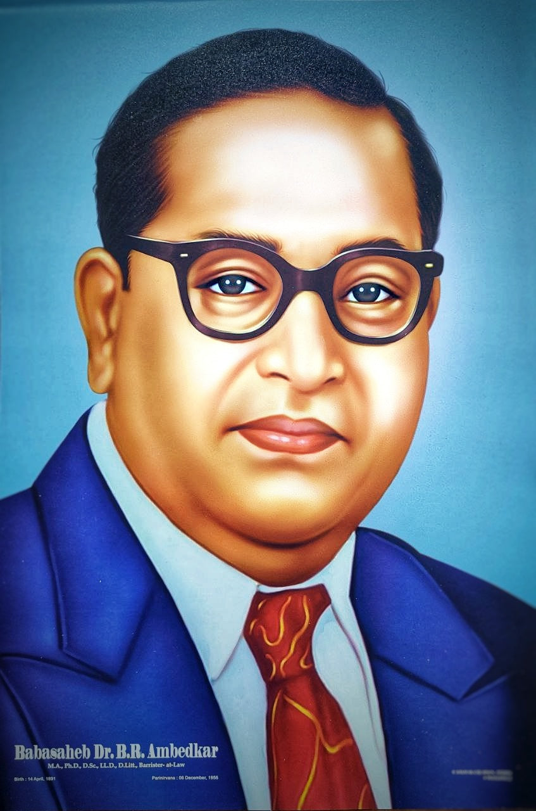

14 April 1891-6 December 1956 (aged 65)
Ambedkar was born on 14 April 1891 in the town and military cantonment of Mhow (now officially known as Dr Ambedkar Nagar, Madhya Pradesh). He was the 14th and last child of Ramji Maloji Sakpal, an army officer who held the rank of Subedar, and Bhimabai Sakpal, daughter of Laxman Murbadkar. His family was of Marathi background from the town of Ambadawe (Mandangad taluka) in Ratnagiri district of modern-day Maharashtra. Ambedkar's ancestors had long worked for the army of the British East India Company, and his father served in the British Indian Army at the Mhow cantonment. Ambedkar was born into a Mahar (Dalit) caste, who were treated as untouchables and subjected to socio-economic discrimination. Although they attended school, Ambedkar and other untouchable children were segregated and given little attention or help by teachers. They were not allowed to sit inside the class. When they needed to drink water, someone from a higher caste had to pour that water from a height as they were not allowed to touch either the water or the vessel that contained it. This task was usually performed for the young Ambedkar by the school peon, and if the peon was not available then he had to go without water; he described the situation later in his writings as "No peon, No Water".He was required to sit on a gunny sack which he had to take home with him. Ramji Sakpal retired in 1894 and the family moved to Satara two years later. Shortly after their move, Ambedkar's mother died. The children were cared for by their paternal aunt and lived in difficult circumstances. Three sons – Balaram, Anandrao and Bhimrao – and two daughters – Manjula and Tulasa -of the Ambedkars survived them. Of his brothers and sisters, only Ambedkar passed his examinations and went to high school. His original surname was Sakpal but his father registered his name as Ambadawekar in school, meaning he comes from his native village 'Ambadawe' in Ratnagiri district. His Marathi Brahmin teacher, Krishnaji Keshav Ambedkar, changed his surname from 'Ambadawekar' to his own surname 'Ambedkar' in school records.